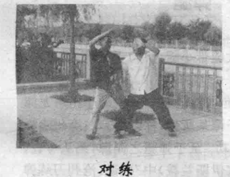
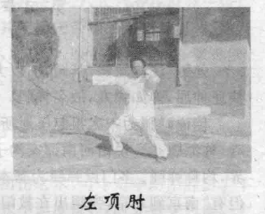
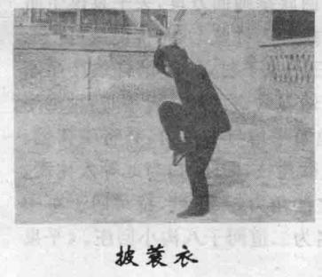
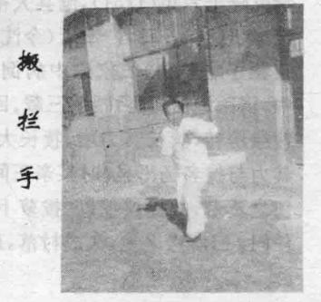
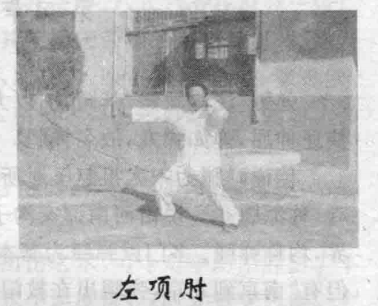
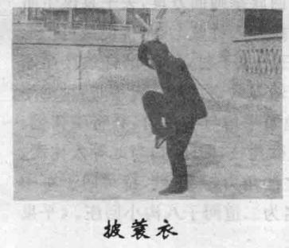
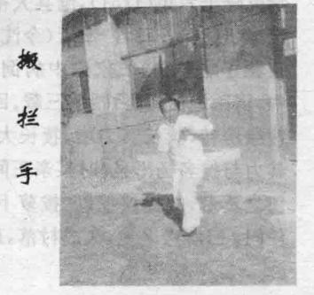

八极拳拳简介
八极拳全称“开门八极拳”，流行于河北省孟村回族自治县孟村镇已有300年的历史。目前已传承十四代，传人遍布全国，远播日本、韩国、新加坡等国和港台地区。
八极拳法的拳械套路主要有八极架、八极拳、六大开、八大招、四郎宽拳、六肘头、太宗拳、太祖拳、华拳、飞虎拳、春秋刀、提柳刀、六合大枪、六合花枪、行者棒、八棍头、纯阳九宫剑等。 拳械套路可单练，亦可对练。八极拳以六大开、八大招为技术核心，套路有八极小架、八极拳(亦称“八极对接”)、六肘头、刚功八极、八极新架、八极双软等。器械以陆合大枪、对扎大陆合为主， 其劲道讲求崩、撼、突、击、挨、戳、挤、靠以及撞靠劲、缠捆劲等。特点为动作简洁、长短相兼、发劲迅猛、撞靠捆跌突出、肘法叠用、下盘稳固。
八极拳的演练不受场地、器材、年龄、性别等因素的限制，简便易学。长期练习不仅可以强身健体，而且可以达到内外兼修、净化心灵的目的。八极拳集力学、医学、生理科学、哲学于一体， 兼蓄儒、道、释和伊斯兰文化，形象地演示了人在自然界中抗争求生存的现实状况，表现出勇往直前的乐观主义精神。
如今众多拳谱、拳法、拳艺因为老拳师的谢世正濒临失传，急需加强保护。
八级拳代表动作

 




